Arcinda Website
Timeline: February to March 2026 (1 month)

Home page
Introduction
Summary: I redesigned and developed the website for Arcinda (The Arts and Culture of Indonesia), a non-profit organization that showcases and promotes traditional Indonesian culture and music.
My roles: Researcher, UI/UX Developer and Designer
Challenge: An intuitive user experience and development process was needed to bring the Arcinda's vision to life. This required an overhaul of Arcinda's previous website, in a way where it can stand out and thrive in today's world.
Tools: HTML/CSS/JS, Figma
Research
Previous design of website: Arcinda's old website has not been updated since 2012. Therefore, it needed features that are required for current-day websites, such as proper navigation/hierarchy, accessibility, following of current design trends, and adaptability of different display sizes (e.g. mobile displays). The main challenge here, would be to figure out how to build an efficient UI/UX experience while retaining critical information from the old website.
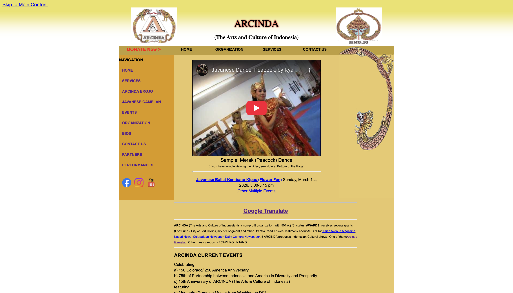
Old homepage
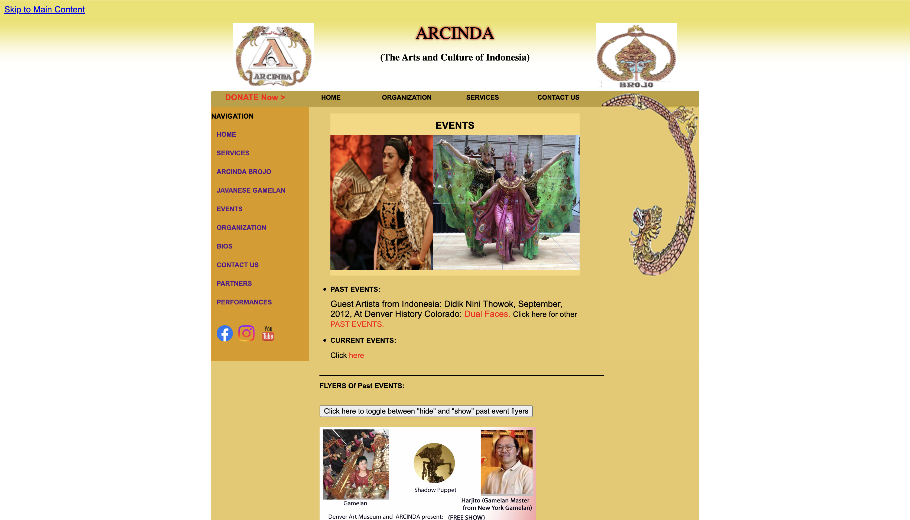
Old events page
Researching other gamelan websites: For inspiration, I wanted to see what websites of other non-profit organizations (revolving around Indonesian gamelan, in particular) looked like, and how UI/UX was handled. Particularly, I wanted to see how I can make Arcinda's landing page as strong and efficient as possible.

Landing page of Gamelan Dharma Swara
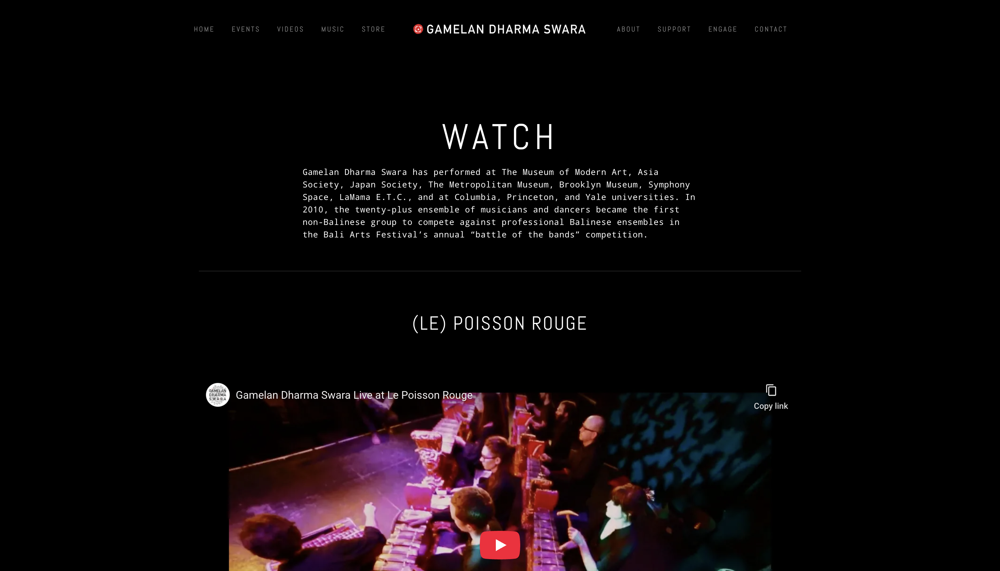
'Watch' page of Gamelan Dharma Swara
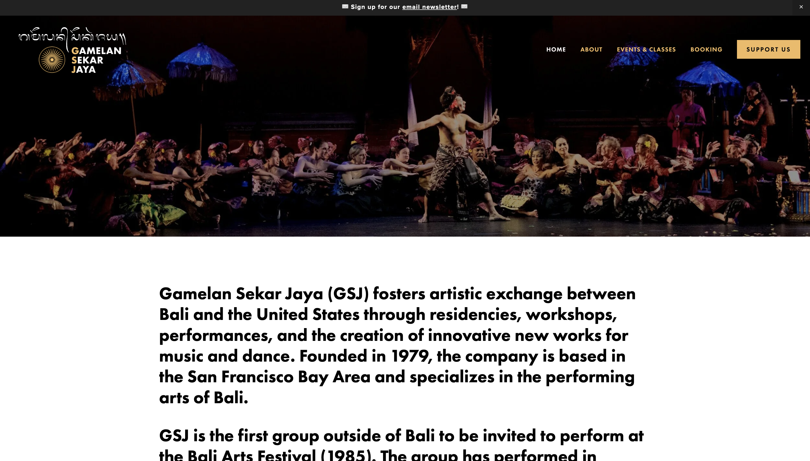
Landing page of Gamelan Sekar Jaya

Landing page cont.
Key opportunities: Both gamelan pages have a strong and clear text hierarchy, which allows information to be effectively conveyed and presented. This also gives inspiration on how content should be grouped, both through navigation and landing page content. A way Arcinda's website can stand out from both of these sites, is to have a strong hero section with a clear CTA that can increase audience turn-out for performances. Accompanied by this, the entire site must be structured in a way that can introduce people to Indonesian arts and culture.
How might we statement: Through Arcinda, how might we give people in Colorado a strong introduction to Indonesian arts and culture, and increase audience turn-out for performances?
Design
First iteration: For my first iteration, I took advantage of the key opportunities from my research to create a modern and intuitive experience that acts as a hub of Arcinda, and let users know about upcoming performances. For the introduction to Indonesian arts and culture, videos and images are provided to show off Arcinda's performances, as well as the addition of a 'Learn' page that introduces people to gamelan.
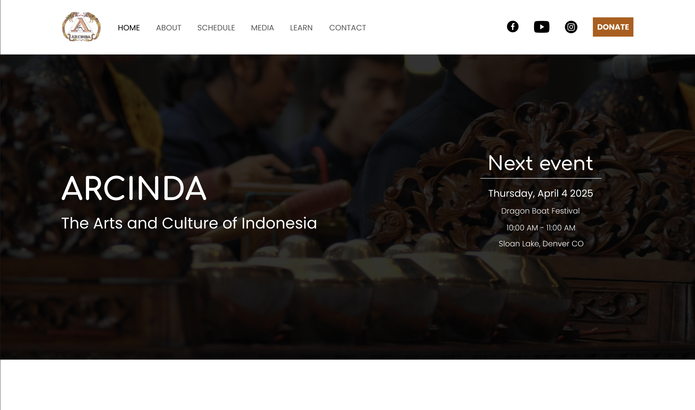
Landing page
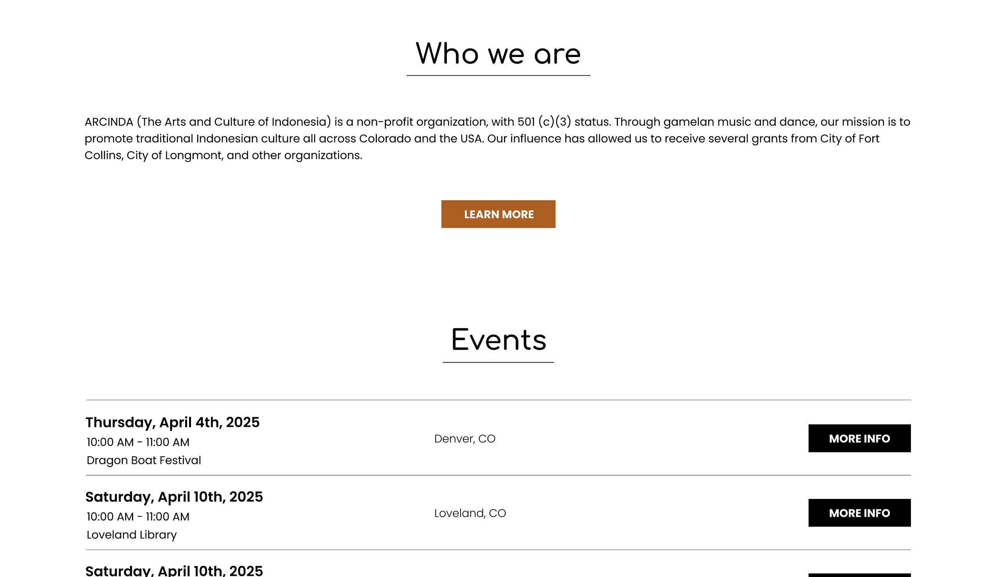
Landing page cont.
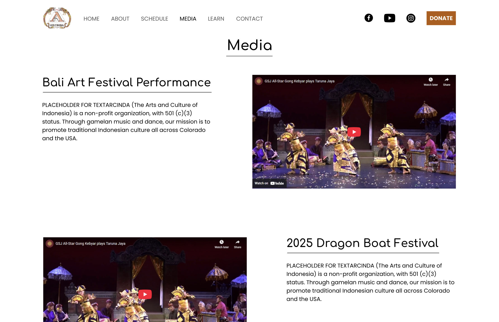
Media page
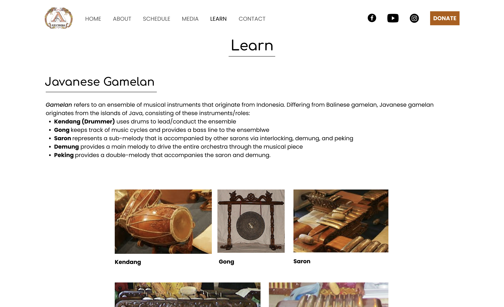
Learn page
Design feedback: After reviewing with fellow designers, this iteration needed a clearer heading hierarchy, CTA, button design. On top of that, they recommended to use proper text and images that doesn't act as placeholder material. This feedback is essential because buttons are an important factor that can make an impact on users' engagement with CTAs, and having real content with strong hierarchy allows to see if a design properly works or not.
Client feedback: The client was satisfied with the design. As a request, the client wanted a feature where the user can click buttons to view different videos. They also wanted to include a teaser video for upcoming performances in the hero section of the landing page. A final addition included certain texts that allows for approval for grants.
Second iteration: Utilizing both design and client feedback, I adjusted the hero section to include body text for upcoming performance details and a CTA that will open more info about said performance via image/PDF. The teaser video was included, as well. To fix the button issue, they were made bigger with rounded corners.
Second iteration and development: After the client approved the design, I proceeded to go from design via Figma to development with HTML/CSS/JS. Although it may seem counter-intuitive to go straight into development after the first iteration, this allowed me to discover edge cases that I wouldn't initially see from designing on Figma. This includes mobile responsiveness, aspect ratio of videos/images, sizing/positioning of content when window size is adjusted.
Landing page
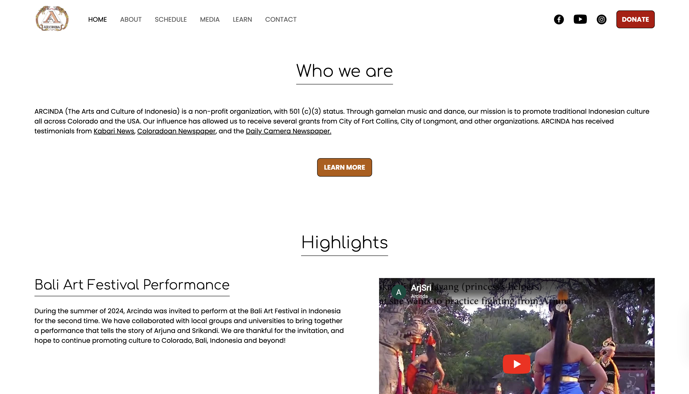
Landing page cont.
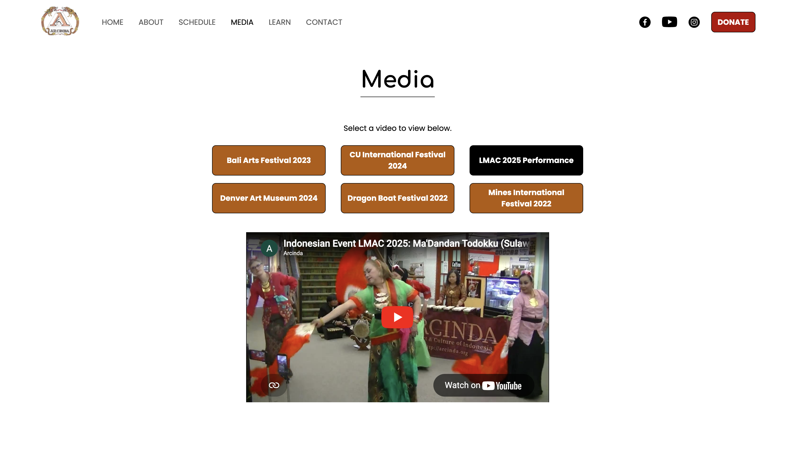
Media page
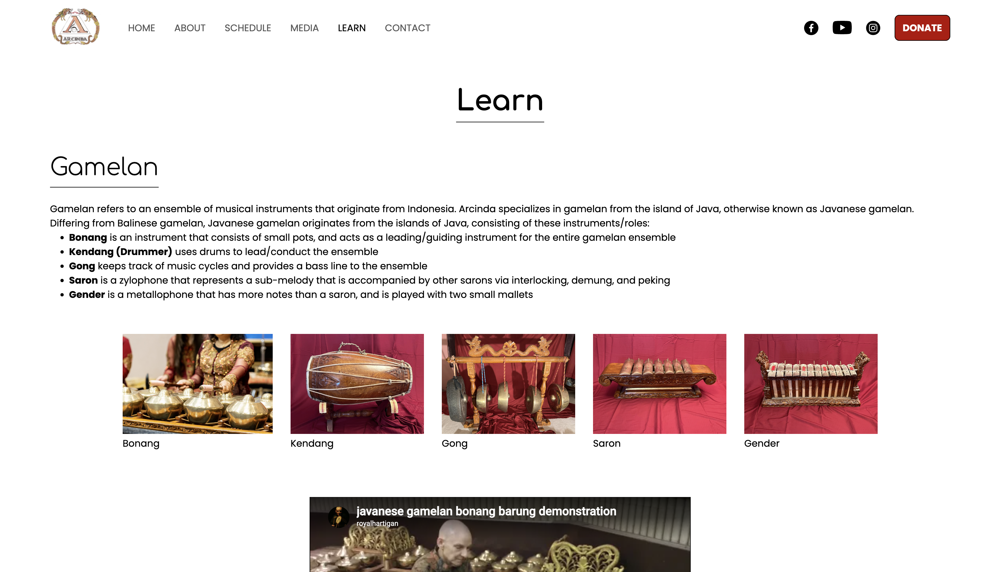
Learn page
Mobile responsiveness: Arcinda's website needed to be responsive to mobile devices. This was a fascinating challenge because my previous UI/UX project from college (Cheyenne Mountain Zoo Case Study) only required to have desktop views made on Figma. Not only would I need to figure out how to design the mobile wireframes, this also needed to be developed with code that allows for proper mobile usage. This includes the addition of a hamburger button + mobile nav menu, different design layouts, etc.
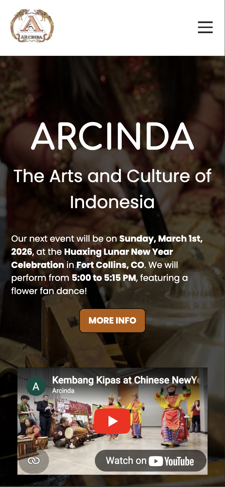
Landing page
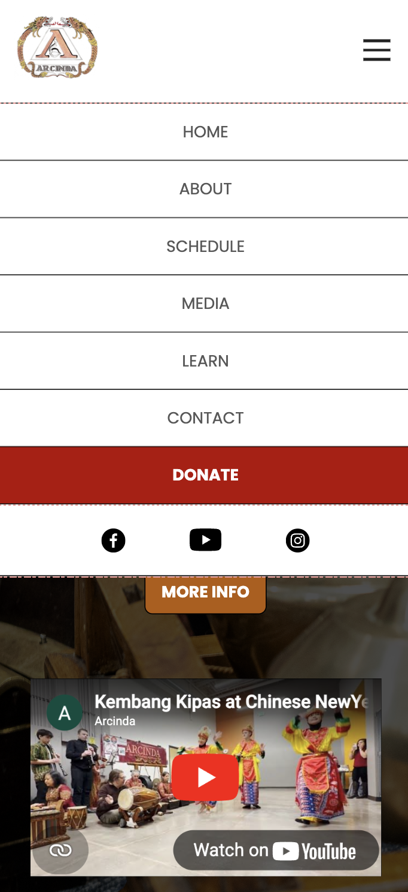
Mobile nav menu
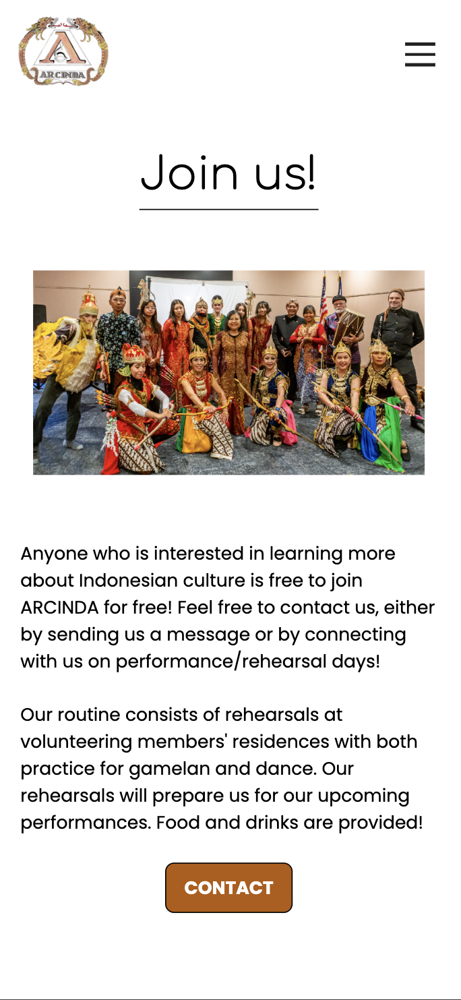
Landing page cont.
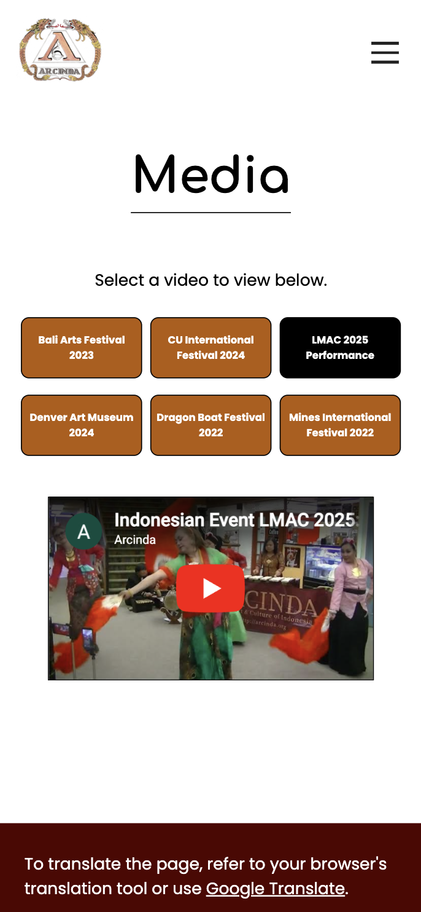
Media page
Reflection
Conclusion: The second iteration was the final product that was shipped to the client. Overall, the new site is a big improvement from the previous one, and is able to stand out while accomplishing Arcinda's goals at the same time. After communicating with the client, they have agreed to maintain the site on their own after I showed them which codes are necessary for site maintaining.
Future plans: For my first time transforming a UI/UX project into a developed product, this was a good challenge that allowed me to build up my design and coding skills. If there was no deadline for this project, I would've been more precise with padding/spacing, as well as figure out a better way to translate said padding/spacing to HTML/CSS.